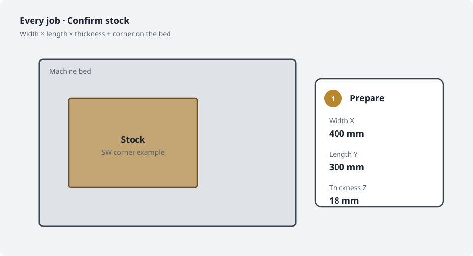

Machine already calibrated? Soft travel stays until hardware changes.
Next: Stock →Every new job · after calibration
Every new piece of wood: link up, home if needed, say where the stock sits, mark the corner start (XY), then touch a probe plate on the top to set height (Z). This is not calibration — the machine is already tuned.
Machine already calibrated? Soft travel stays until hardware changes.
Next: Stock →


Text detail: Prepare & Z probe
Need machine tuning? Calibration (once) →